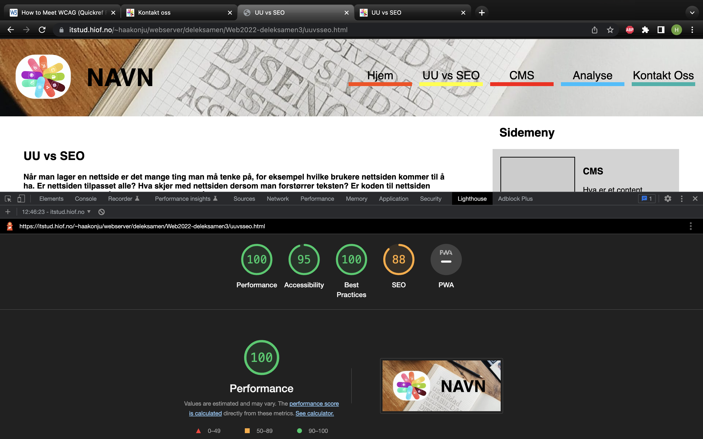

Hjem
Da jeg analyserte hjemsiden var det ikke mye å ta tak i.
Det er noe som går igjen på alle nettsidene og det er at bilder skal være jpeg og ikke jpg. Så jeg
reformaterte alle bildene. Jeg har også lagt inn hover-effekt på menyen i desktop fordi skrifta
synes litt
for dårlig med bakgrunnen. Jeg la inn en liten bakgrunnsfarge i tillegg bare for at alle knappene
skulle
være like lette å lese.
Jeg har lagt til sosiale medier-knapper på alle sidene sånn at man kan dele nettsiden på facebook og
twitter, (merk at twitter-delingen ikke fungerer siden nettsiden ikke er «whitelistet» av
twitter).
Første bildet er deleksamen 3 og det andre bildet er deleksamen 4 etter endringer
UU vs SEO
Da jeg skulle analysere nettstedet mitt, brukte jeg lighthouse på Chrome. Først analyserte jeg
deleksamen 3 uuvsseo.html for mobil, det ga 100 i performance, men nettsiden så ikke bra ut på
mobil.
Tabellen på siden krympet og fulgte bredden på skjermen, men teksten ble nesten uleselig. Det jeg
gjorde var å lage en ekstra tabell, med display: none; når skjermen var i desktop-bredde.
en annen tilbakemelding jeg fikk var at bildene burde være i JPEG og ikke i JPG. Det jeg gjorde var
å reformate alle bildene, men det hadde ingen effekt på noe.

Første bildet er deleksamen 3 og det andre bildet er deleksamen 4 etter endringer
CMS
CMS siden hadde en veldig dårlig score på analysen. Dette på blant annet fordi tabellen ikke var
mobilvennlig.
Noe av det som ikke var mobilvennlig i cms del 3 var at jeg hadde overflow på rutene i tabellen, som
gjorde at teksten ikke viste når man gjorde siden smal. Til slutt var innholdet uleselig. Derfor
lagde jeg en tabell som hadde display: off; når sida var i desktop-størrelse.
Første bildet er deleksamen 3 og det andre bildet er deleksamen 4 etter endringer
WCAG
Ifølge WCAG 2.0-standarden er punkt 1.3.2 meningsfylt rekkefølge, 2.1.1 tastatur
og 4.1.1 parsing nivå A krav eller må-krav. Jeg har bare plukket ut disse tre punktene for å vise
eksempler, men dersom man laster ned excel-fila så kan man se hvilke krav jeg skjekket om nettsiden
oppfyller.
Av AA krav, så oppfyller siden blant annet punkt 1.4.4 endring av skriftstørrelse, 2.4.6
overskrifter og ledetekster, og 3.2.3 konsekvent navigering.
punkt 1.4.4 sier at man skal kunne endre skriftstørrelsen til 400 uten at informasjon på siden går
tapt, da jeg testet dette gikk det an.
2.4.6 sier at overskrifter og ledetekster skal gi mening og hjelpe brukeren å finne fram, noe jeg
mener siden gjør
Konsekvent navigering er viktig for at brukeren skal kunne finne fram lett.
Disse kravene finner du på UU-tilsynet og du kan laste ned malen på nettsidene deres.
AAA-krav er ikke i malen så da gikk jeg inn på nettsiden www.w3.org og fant to krav siden min
oppfyller:
Punkt 1.4.7 Lav eller ingen bakgrunnslyd, og 2.2.3 No timing er to AAA-krav jeg oppfyller.
No timing krever at dersom du bruker for lang tid på siden blir du ikke kastet ut, og lav eller
ingen bakgrunnslyd oppfylles fordi det ikke blir spillt av noen lyd eller video på siden.
(How to Meet WCAG (Quickref Reference), 2019)
Dersom man ønsker å lese mer om AAA på w3.org kan man trykke på linken HER
PDF til WCAG-sjekklisten
Excel til WCAG-sjekklisten